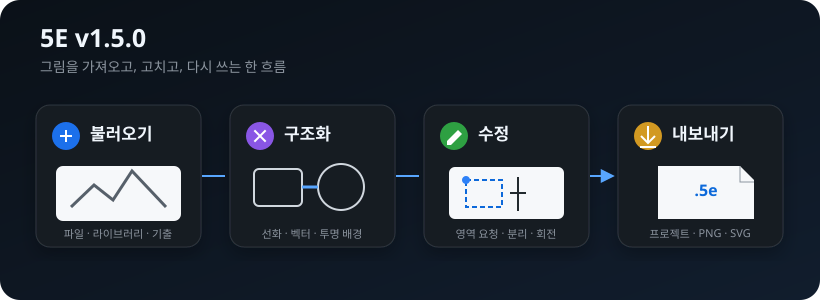
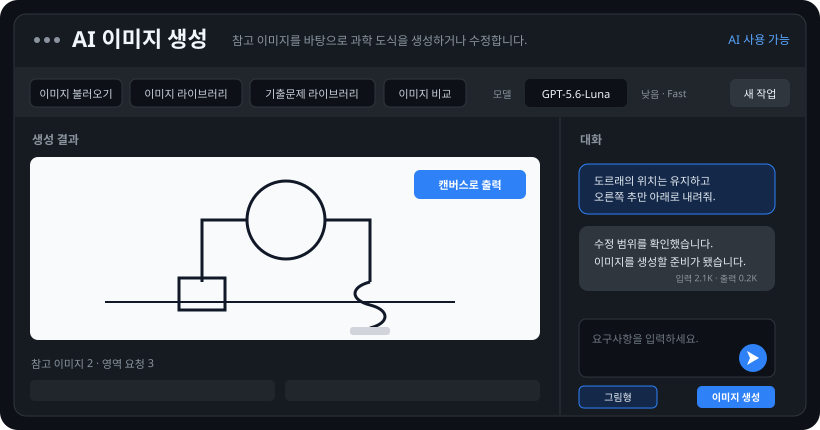
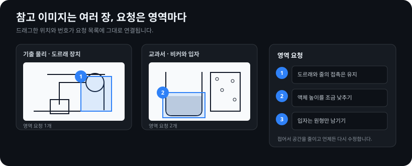
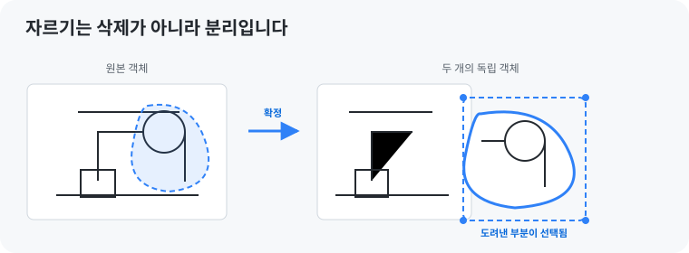
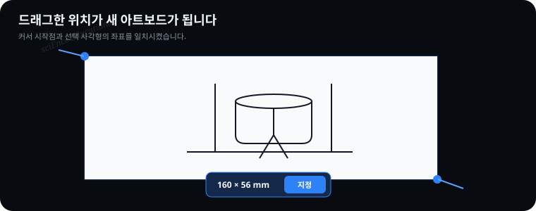
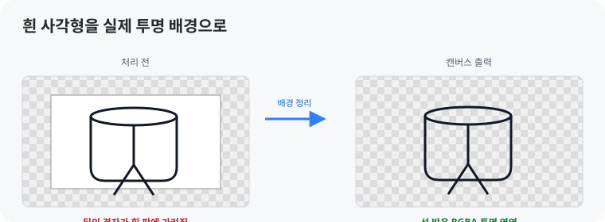
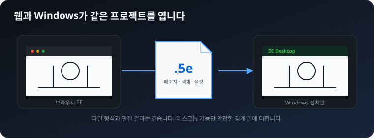
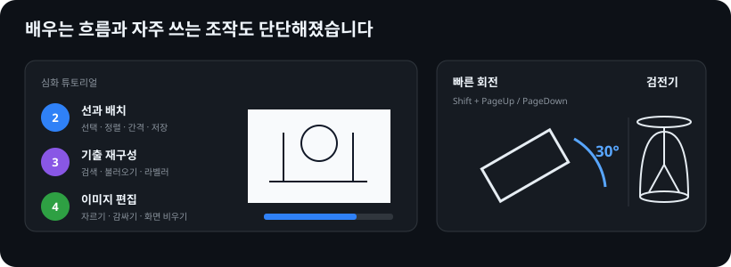
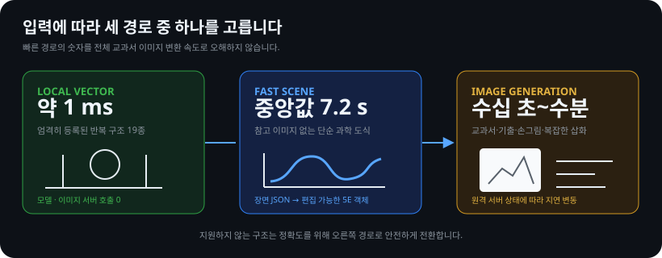
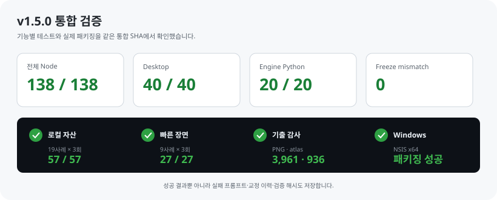

한곳에서 이어지는 작업
외부 이미지, 내부 이미지, 기출문제를 불러와 AI와 편집기로 곧바로 넘깁니다.
5E RELEASE NOTES · AUGUST 2026
v1.5.0은 이미지·기출문제·AI·편집기를 하나의 작업 흐름으로 연결하고, 자르기와 아트보드부터 Windows 설치판과 평가원 도식 엔진까지 크게 다시 정리한 판입니다.

외부 이미지, 내부 이미지, 기출문제를 불러와 AI와 편집기로 곧바로 넘깁니다.
이미지 내부를 도려내도 사라지지 않고 두 개의 독립 객체로 남습니다.
로컬 벡터, 빠른 장면, 이미지 생성 중 안전한 경로를 선택합니다.
AI 기능을 중앙 모달형 이미지 작업대로 다시 만들었습니다. 왼쪽에는 생성 결과와 참고 이미지, 오른쪽에는 대화와 요청 입력을 배치해 결과를 보면서 지시를 이어갑니다.

요구사항이 확정되지 않았다면 보내기 버튼으로 대화만 이어갑니다. 실제 그림이 필요할 때만 이미지 생성을 누릅니다. 상투적인 요청문을 자동으로 작성하지 않으며 사용자의 문장이 요청 기록에 그대로 남습니다.
이미지가 도착하면 대화에 완료 안내를 남기고 캔버스로 출력 버튼으로 현재 페이지에 삽입합니다. 이미지 생성 뒤 작업이 잠기던 문제도 turn 종료 확인과 복구 절차로 고쳤습니다.
문자·숫자·기호·라벨·지시선·화살표를 만들지 않습니다. 5E에서 정확한 표기를 나중에 붙입니다.
사용자가 요청한 표기만 포함하고 장식적 효과와 불필요한 명암을 억제합니다.
참고 자료는 이미지 불러오기, 이미지 라이브러리, 기출문제 라이브러리의 세 경로에서 가져옵니다. 파일 탐색기와 화면 영역 캡처도 같은 불러오기 메뉴에 들어갑니다.

이미 보낸 이미지는 대화마다 반복 전송하지 않고, 동일 픽셀 자료는 중복 제거합니다. 큰 이미지는 선화 여부에 맞춰 축소·압축하고 여러 자료는 개요·관련 영역·접촉 시트로 제한합니다. 완전히 같은 요청과 입력의 성공 결과는 캐시에서 즉시 다시 엽니다.
기존 가위는 이미지를 양 끝까지 가르는 데 적합했지만 내부의 특정 부분만 떼어내기 어려웠습니다. 이제 닫힌 영역도 분리할 수 있으며, 결과는 삭제되지 않습니다.

스마트 오려내기는 비슷한 색과 연결된 픽셀을 기준으로 대상을 찾습니다. 민감도를 조절하고 미리보기에서 확인한 뒤 분리합니다.
드래그로 영역 지정은 모서리를 늘이는 기능이 아닙니다. 내보내기 범위를 고르듯 캔버스에서 사각형을 끌면 그 좌표와 크기가 새 아트보드가 됩니다.

Enter 또는 크기 팝업 옆의 지정 버튼으로 확정합니다.AI 생성 결과와 외부 이미지의 흰 배경 때문에 다른 도형 위에 올렸을 때 큰 사각형처럼 보이던 문제를 정리했습니다. 캔버스 삽입 전 배경을 분석해 실제 RGBA 투명 이미지로 만듭니다.

.5e 프로젝트와 Windows 설치판프로젝트 저장 확장자를 .5e로 바꿨습니다. 내부는 안전한 JSON 구조를 유지해 기존 저장·불러오기·자동 저장 흐름과 호환됩니다.

Windows 설치판은 웹판과 별개의 편집기가 아닙니다. 같은 편집기와 프로젝트 형식을 Electron에서 열고, AI 연결·창 캡처처럼 데스크톱에서만 가능한 기능을 안전한 preload 경계 뒤에 둡니다.

PageUp/PageDown의 5° 회전에 더해 Shift+PageUp/Shift+PageDown으로 30°씩 회전합니다. 회전된 객체를 다시 변형할 때 선택 상자와 스마트 가이드가 원래 축으로 튀던 문제도 고쳤습니다.
저장·검색·라벨러·중앙 불러오기·화면 비우기·감싸기 시연을 실제 작업 흐름으로 연결하고, 읽기 단계에서 오조작해 과정에 갇히는 문제를 막았습니다.
검전기를 정식 장치 부품으로 추가하고 잎 벌어짐과 종횡비를 프로젝트 저장 규칙에 포함했습니다. MCP에는 출처가 검증된 손·학생·우주선 자산과 안전한 부품 생성 규칙을 보강했습니다.
Engine V2는 단일 프롬프트가 아니라 입력을 분석하고 적합한 경로를 고른 뒤 결과를 평가·교정하는 패키지입니다.

| 경로 | 적합한 입력 | 검증 속도 | 성격 |
|---|---|---|---|
| 로컬 벡터 | 정확히 등록된 반복 구조 19종 | 약 1ms | 모델 호출 없이 편집 객체 생성 |
| 빠른 장면 | 참고 이미지 없는 단순 회로·장치·그래프 | 중앙값 약 7.2초 | Luna가 JSON을 만들고 5E가 렌더링 |
| 이미지 생성 | 교과서·기출·손그림·복잡한 삽화 | 수십 초~수분 | 원격 이미지 서버 지연에 따라 변동 |
Engine V2.2 동결 최종 24사례 중 22사례가 통과해 91.7%를 기록했습니다. 정확 컴파일 결과는 21/24, 87.5%였습니다. 개발 36사례는 27/36, 75%로 화학·지구과학의 복잡한 수정에 약점이 남았습니다.
성공 결과뿐 아니라 실패 프롬프트, 구조 손실·과도한 회색·편집 범위 초과 같은 실패 유형, 교정 이력과 freeze 해시도 저장했습니다.

| 검증 | 결과 |
|---|---|
| 로컬 자산 재현 | 19사례 × 3회 = 57/57 |
| 빠른 장면 반복성 | 9사례 × 3회 = 27/27 |
| 기출 자산 감사 | PNG 3,961개 · atlas 936행 |
| MCP smoke | 통과 |
| Windows NSIS x64 | 패키징 성공 |
대량 생성 중간 결과 1,909파일·341MiB는 Git 이력에서 제외했습니다. 재현 코드, 사례 정의, freeze, 요약 JSON, 실패·교정 이력만 저장소에 남겼습니다.
서버 상태에 따라 수십 초에서 수분까지 달라집니다. Luna·낮은 추론·Fast가 권장값이지만 시간을 보장하지 않습니다.
참고 이미지 변환 결과는 자동 보장되지 않습니다. 구조·연결·접촉 관계를 생성 뒤 확인해야 합니다.
엄격한 19개 패턴만 로컬에서 즉시 생성합니다. 표현이나 부품이 달라지면 다른 경로로 전환합니다.
자동 업데이트와 코드 서명은 아직 없습니다. SmartScreen 경고와 lockfile high severity 경고 1건이 남아 있습니다.
feat/ai-assist의 Cloudflare Worker와 채팅 UI는 포함하지 않았습니다. v1.5.0은 Windows Desktop의 로컬 Codex 연결을 사용합니다.Ctrl+F5로 새로고침합니다..5e 파일은 그대로 열 수 있습니다.v1.5.0-beta.1입니다. 공개 태그와 설치 파일은 최종 배포 절차에서 같은 버전으로 맞춥니다.v1.5.0은 AI가 그림을 대신 완성하는 판이 아니라, 그림을 가져와 비교하고 부분을 지정해 요청한 뒤 5E에서 끝까지 고칠 수 있게 만든 판입니다.